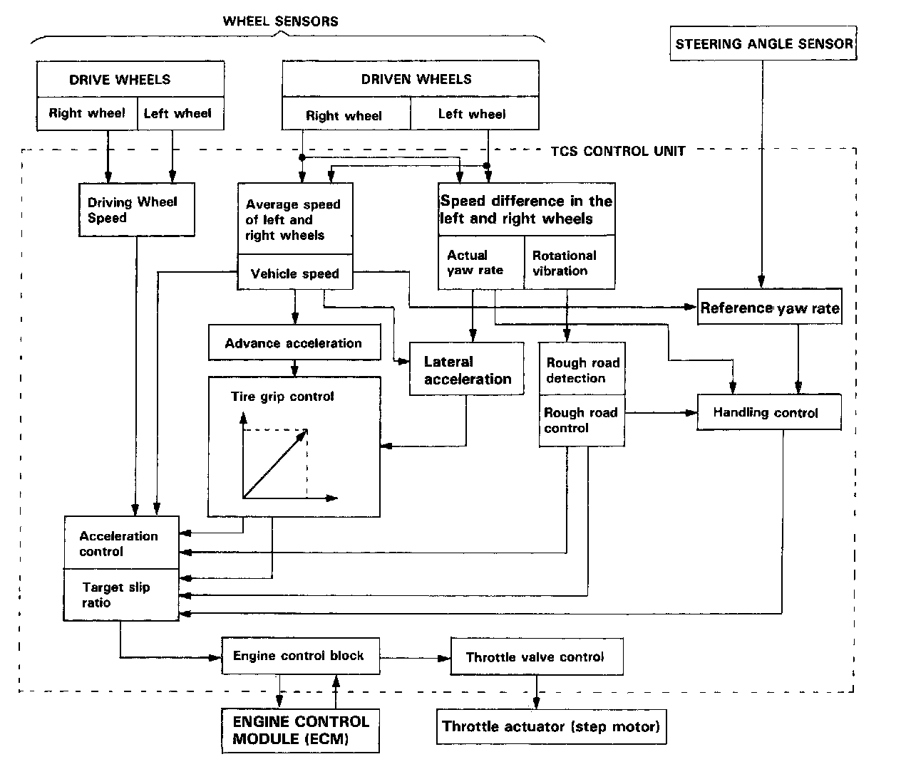
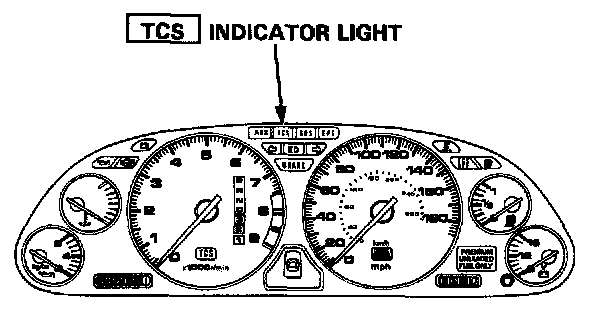

Traction Control Module: Description and Operation
Acceleration Control:The TCS control unit gets signals from the wheel sensors about the rotational speed of each wheel. Traction control is activated when the rotational speed of the driving wheels differs from the rotational speed of the driven wheels (i.e., vehicle speed).
Handling Control:
Based on signals about driving wheel and driven wheel rotational speeds, the control unit calculates the car's "yaw" rate (i.e., the turn rate of the car's body). Based on signals from the steering angle sensor, the control unit also calculates the yaw rate expected by the driver. If the difference between actual and expected yaw rates is substantial-that is, if the direction of the car's body will exceed the driver's expected line-the control unit signals the throttle actuator, which closes the throttle valve, thus reducing engine power and maintaining the expected line.
Rough Road Control:
Based on signals from the wheel sensors, the control unit detects a rough road based on frequency of wheel rotational vibration. The control unit then signals the throttle actuator to relax engine power, thus improving acceleration efficiency.
Grip Control:
Based on signals about wheel speed and yaw rate, the control unit determines the efficiency of the grip of the tires on the road and signals the throttle actuator to relax engine power if necessary, thus improving grip.

Fail-Safe Function:
If the control unit detects an abnormality, it shuts the traction control system off and causes the TCS indicator light to come on. However if the abnormality is detected while the TCS is activated, the control unit first establishes the appropriate wheel spin velocity, then shuts the system down, thus preventing excessive wheel spin.

Self-Diagnosis Function:
If the control unit detects an abnormality, it records a Diagnostic Trouble Code (DTC) which can be used to diagnose the problem. The DTC is shown at the TCS indicator* light when the Service Check connector terminals are connected with a jumper wire.